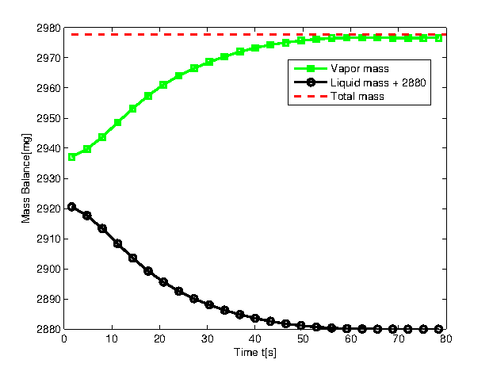
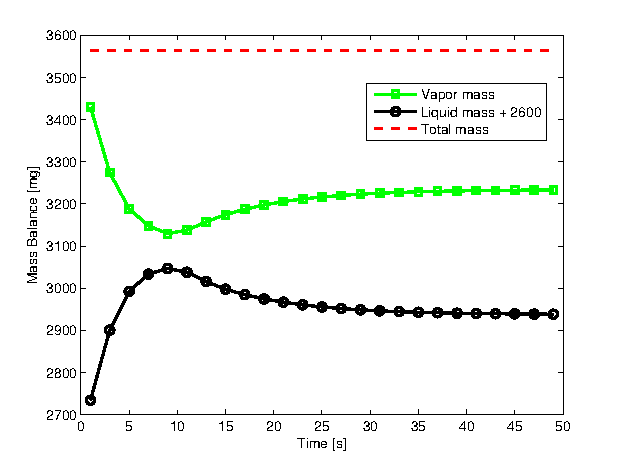
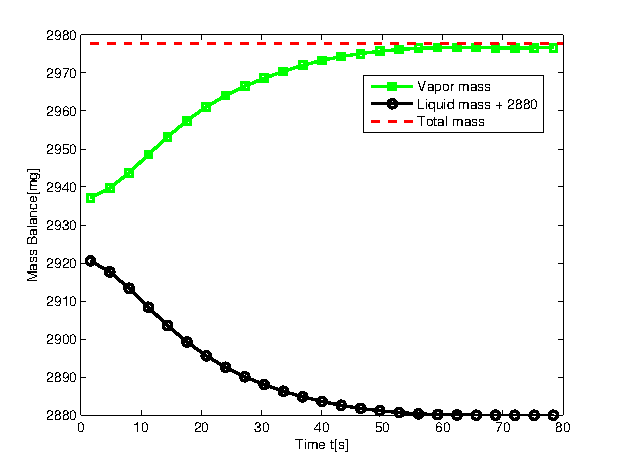
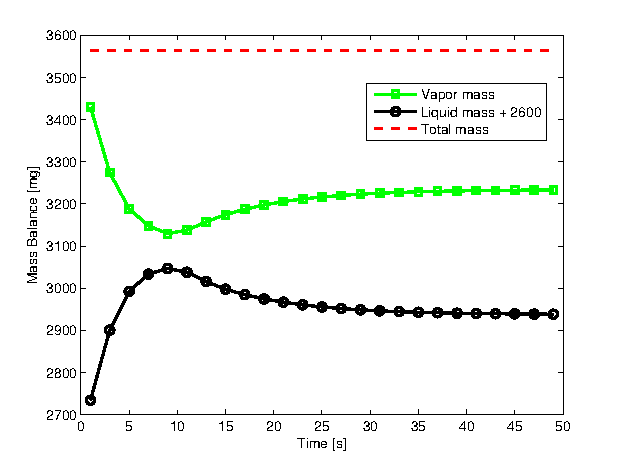

Liquid water: 10^7 droplets
Vapor water: vapor in 1*1*1 domain
| Evaporation process, vapor increase and liquid decrease | Condensation process, vapor decrease and liquid increase |
|  |  |
| Evaporation process, vapor increase and liquid decrease | Condensation process, vapor decrease and liquid increase |
|  |  |